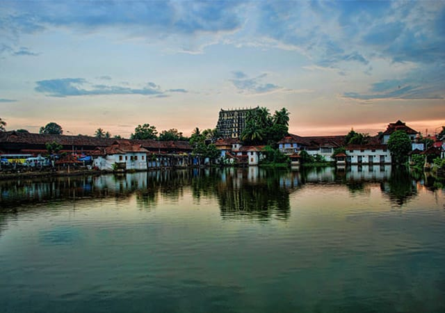
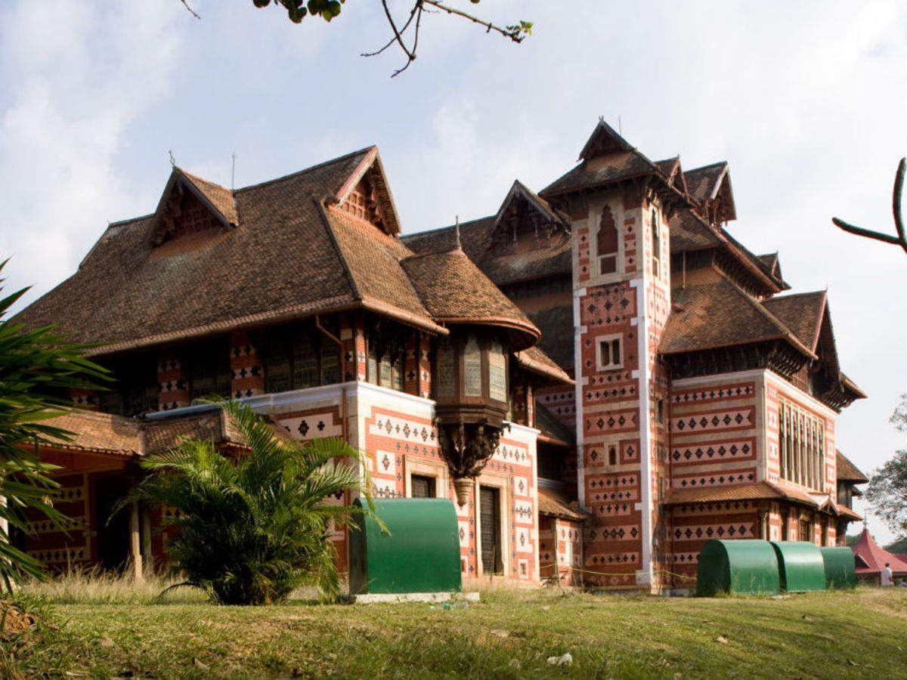
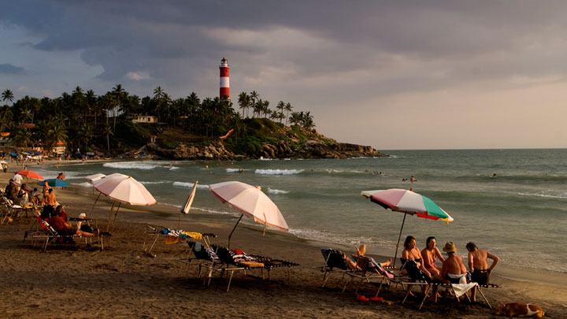
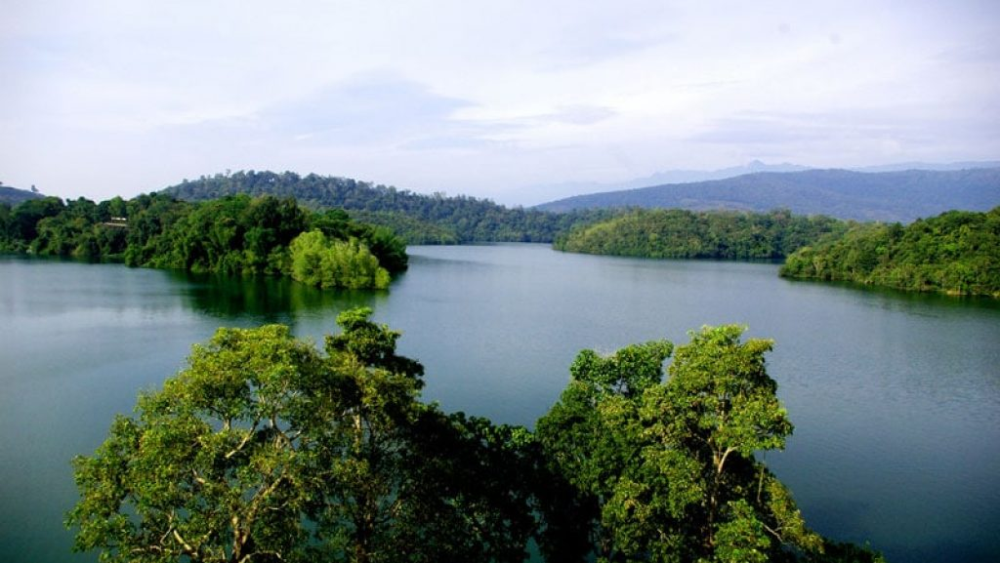
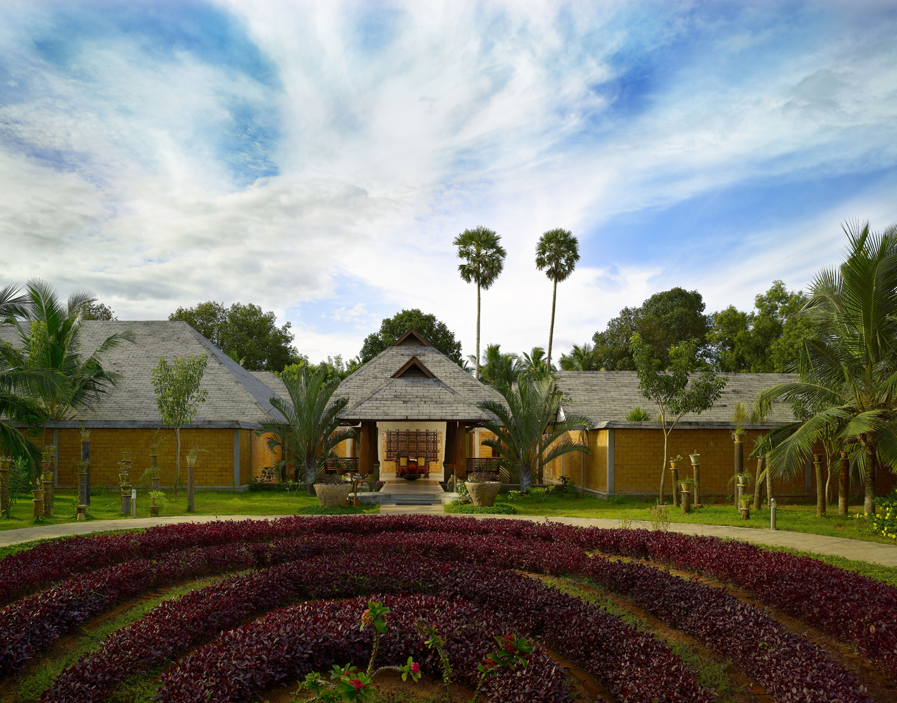

The city owes its name to the famous Padmanabhaswamy Temple, situated right in the heart of Thiruvananthapuram. The main deity is that of Lord Vishnu in eternal sleep posture on Anantha, the hooded serpent. The eighteen feet idol has to be viewed through three separate doors.The temple is known for its architectural marvel in stone and bronze as well. Brilliant mural sketches adorn the interiors. While moving around the temple, do not miss the famous corridor supported by three hundred sixty-five and a quarter pillars, all made of granite. You need to see it to believe the architectural splendor and craftsmanship that has gone into its making.
In the heart of Thiruvananthapuram city lies the great Napier Museum and the Natural History Museum in the Museum compound, close to the Zoological park. Built in the 19th century, it has its own natural air-conditioning system. It contains a host of historical artefacts including bronze idols, ancient ornaments, a temple chariot and ivory carvings. People are especially impressed by the Japanese shadow-play leather that is used to depict the epics of the Mahabharata and Ramayana. Kerala's rich cultural heritage is in full display here. The museum was named after the former Madras Governor General, John Napier. Also known as Government Art Museum, the architectural style of museum is a mix of Indian, Chinese, Kerala and Mughal Schools of Architecture.
Kovalam is an internationally renowned beach with three adjacent crescent beaches. It has been a favourite haunt of tourists since the 1930s. A massive rocky promontory on the beach has created a beautiful bay of calm waters ideal for sea bathing. The leisure options at this beach are plenty and diverse. Sunbathing, swimming, herbal body toning massages, special cultural programmes and catamaran cruising are some of them. The tropical sun acts so fast that one can see the faint blush of coppery tan on the skin in a matter of minutes. Life on the beach begins late in the day and carries on well into the night. The beach complex includes a string of budget cottages, Ayurvedic health resorts, convention facilities, shopping zones, swimming pools, Yoga and Ayurvedic massage centres. Accommodation facilities for tourists at Kovalam range from five star hotels to budget hotels and the choice of food available at restaurants and cafeterias range from Continental varieties to South Indian delicacies. Thiruvananthapuram, the capital city of Kerala, is just 16 km away from Kovalam and getting there is no hassle. But if you are on holiday it is better to stay in Kovalam and visit the city. The city of Thiruvananthapuram has many interesting places to see like the Napier Museum, the Sri Chitra Art Gallery and the Padmanabhaswamy Temple. The SMSM Institute, a State owned handicrafts emporium, is the ideal place to pick up ethnic curios and other articles.
Neyyar dam is a gravity dam on the Neyyar River in Thiruvananthapuram district of Kerala, South India, located on the foot of the Western Ghats about 30 km from Thiruvananthapuram.It was established in 1958 and is a popular picnic spot. Lying against the southern low hills of the Western Ghats, Neyyar Dam has a scenic lake. Neyyar dam is situated at Kallikkad Panchayath of Kattakkada Taluk of Trivandrum district. The peak Agasthya kooodam is very near to Neyyar dam. The dam was built in the land given by an agriculturist known as Karuvachiyil Krishan Panicker, Father of Janaki Thankamma, Maruthummoottil family, and his other family members for irrigation purposes. One canal of Neyyar flows to western districts of Tamil Nadu. The main river Neyyar flows through Kallikkadu, Ottasekharamangalam, Aryancode, Kezharoor, Perumkadavila, Marayamuttom, Neyyattinkara and Poovar and ends at the Arabian Sea.
Ayurveda or the ´science of life´ is a system of traditional medicine native to the Indian Subcontinent. It can be referred to as the ultimate antidote to the ravages of today´s hectic lifestyle. Developed in India over thousands of years ago, it is the art and science of better living through the perfect harmony of mind, body and soul. At Poovar Island Resort we have created the perfect ambiance to enjoy, understand and absorb the ancient remedies of Ayurveda. We have an exclusive Ayurvedic treatment and rejuvenation centre; ´Ayurveda Village´ - with all the facilities and a medicinal ´Herbarium´ - providing effective and long-term benefits of Ayurveda.
